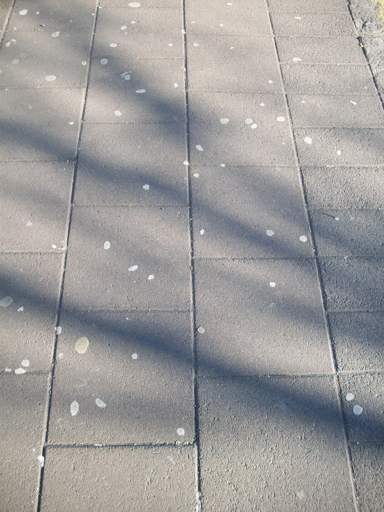

A
Poisson process is a type of random mathematical object that consists of points randomly located on a mathematical space. The essential feature of a Poisson process is that the points occur independently of one another. This process is named after French mathematician Siméon Denis Poisson.
The Poisson process is often defined on the real line, where it can be considered as a stochastic process. In this setting, it is used in queueing theory to model random events, such as the arrival of customers at a store, phone calls at an exchange, or occurrence of earthquakes, distributed in time.
In the plane, the point process, also known as a spatial Poisson process, can represent the locations of scattered objects such as transmitters in a wireless network, particles colliding into a detector, or trees in a forest.
A Poisson process is a stochastic model that describes the occurrence of events in continuous time. It exhibits the key property that the number of events in non-overlapping intervals follows a Poisson distribution:
if the average number of events per interval is \(\lambda\), the probability of observing \(k\) events in an interval is given by:
\[P(k; \lambda) = \frac{\lambda ^ k e ^{-\lambda}}{k!}\]
Example
Chewing gum on a sidewalk. The number of chewing gums on a single tile is approximately Poisson distributed.

Poisson Process Key properties
- Independence: Events occur independently in disjoint intervals.
- Stationarity: The process has a constant rate of event occurrence.
- Memoryless: The time until the next event is memoryless, meaning it does not depend on the past.